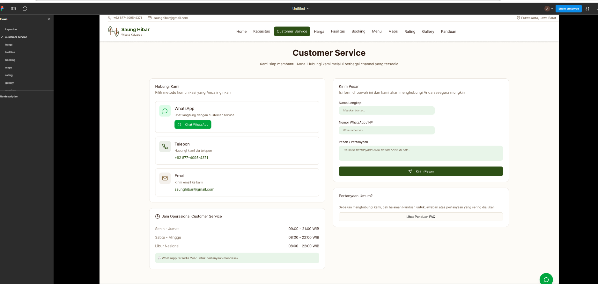
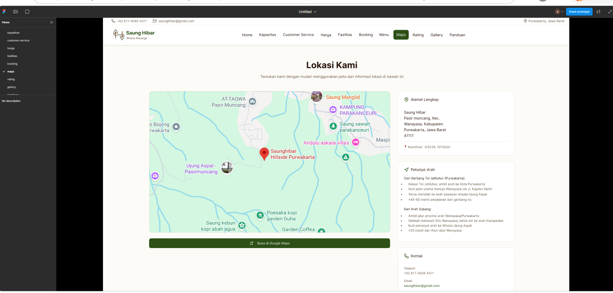
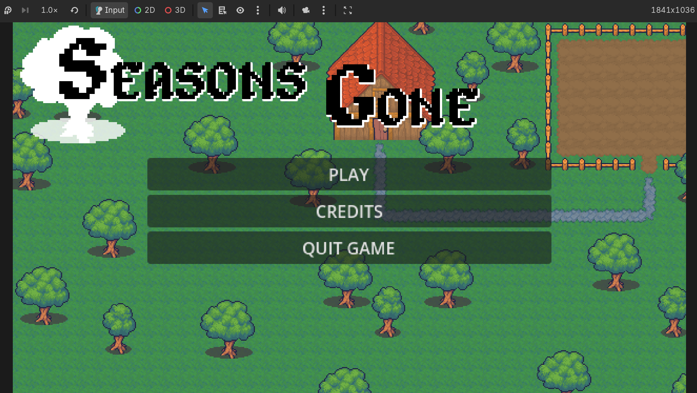
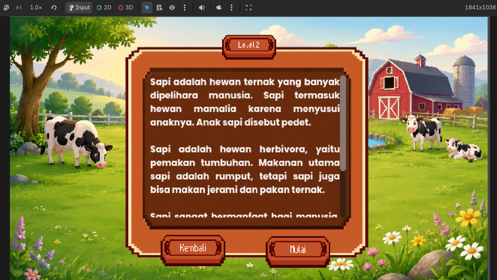
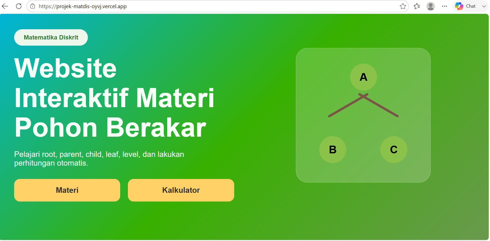
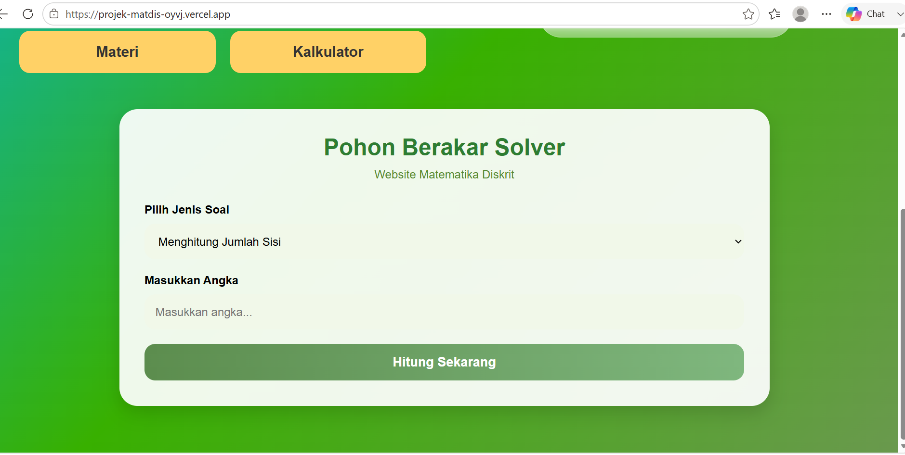
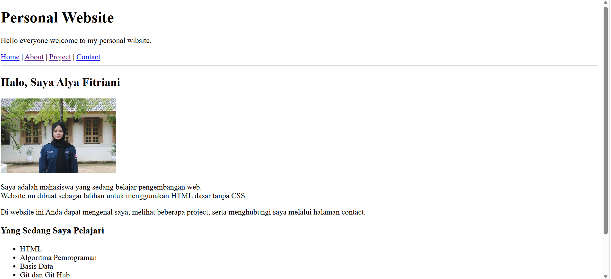
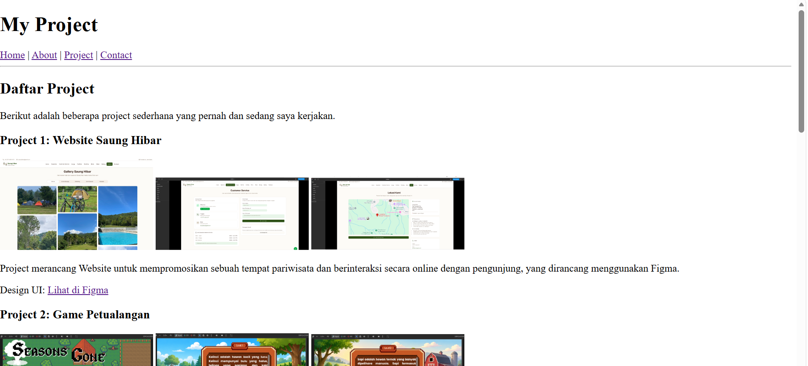

Berikut adalah beberapa project sederhana yang pernah dan sedang saya kerjakan.



Project merancang website untuk mempromosikan sebuah tempat pariwisata secara online untuk umum bisa diakses oleh siapa saja, yang dirancang menggunakan Figma.
Design UI: Lihat di Figma



Project game edukasi yang berisi tentang pengetahuan mengenai beberapa satwa, yang didalamnya terdapat sebuah POP UP yang berisi pertanyaan.
Repository: Lihat di Github


Project website interaktif dari salah satu materi mata kuliah matematika diskrit yaitu pohon berakar/rooted tree
yang bisa menghitung bagian dari sebuah pohon seperti menghitung jumlah sisi, tinggi pohon, derajat simpul, dan menentukan level pohon. .
Repository: Lihat di Github


Project personal website yang berisi tentang diri saya seperti data diri, hobi, riwayat pendidikan, dan project yang sudah pernah saya kerjakan dan yang sedang berjalan.
| Ringkasan Portofolio Project | |||
| No. | Nama Project | Detail Project | |
|---|---|---|---|
| Teknologi | Status | ||
| 1 | Website Saung Hibar | Figma | Selesai |
| 2 | Game Petualangan | Godot, Github | |
| 3 | Rooted Tree | Github, Vercel | |
| 4 | Personal Website | VS Code, HTML | Dalam Pengembangan |
© 2026 Alya Fitriani